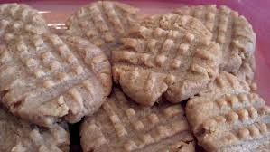
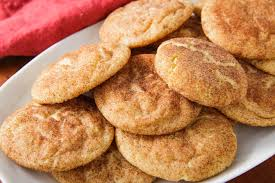

PEANUT BUTTER COOKIES
Prep: 15 mins
Cook: 10 mins
Additional: 1 hr
Total: 1 hr 25 mins
Servings: 24
Yield: 4 dozen
Ingredient Checklist
- 1 cup unsalted butter
- 1 cup crunchy peanut butter
- 1 cup white sugar
- 1 cup packed brown sugar
- 2 eggs
- 2 ½ cups all-purpose flour
- 1 teaspoon baking powder
- ½ teaspoon salt
- 1 ½ teaspoons baking soda
DIRECTIONS:
- Cream butter, peanut butter, and sugars together in a bowl; beat in eggs.
- In a separate bowl, sift flour, baking powder, baking soda, and salt; stir into butter mixture.
- Put dough in refrigerator for 1 hour.
- Roll dough into 1 inch balls and put on baking sheets. Flatten each ball with a fork, making a crisscross pattern.
- Bake in a preheated 375 degrees F oven for about 10 minutes or until cookies begin to brown.
CHOCOLATE CHIP COOKIES
Prep: 20 mins
Cook: 10 mins
Additional: 30 mins
Total: 1 hr
Servings: 24
Yield: 4 dozen
Instructions Checklist
- 1 cup butter, softened
- 1 cup white sugar
- 1 cup packed brown sugar
- 2 eggs
- 2 teaspoons vanilla extract
- 1 teaspoon baking soda
- 2 teaspoons hot water
- ½ teaspoon salt
- 3 cups all-purpose flour
- 2 cups semisweet chocolate chips
- 1 cup chopped walnuts
Directions:
- Preheat oven to 350 degrees F (175 degrees C).
- ream together the butter, white sugar, and brown sugar until smooth. Beat in the eggs one at a time, then stir in the vanilla.
- Dissolve baking soda in hot water. Add to batter along with salt. Stir in flour, chocolate chips, and nuts.
- Drop by large spoonfuls onto ungreased pans.
- Bake for about 10 minutes in the preheated oven, or until edges are nicely browned.

GINGERBREAD MAN:
Prep:
20 mins
Cook:
10 mins
Additional:
4 hrs
Total:
4 hrs 30 mins
Servings:
24
Yield:
2 dozen cookies
INGREDIENTS:
3 cups flour
2 teaspoons McCormick® Ginger, Ground
1 teaspoon McCormick® Cinnamon, Ground
1 teaspoon baking soda
¼ teaspoon McCormick® Nutmeg, Ground
¼ teaspoon salt
¾ cup butter, softened
¾ cup firmly packed brown sugar
½ cup molasses
1 egg
1 teaspoon McCormick® Pure Vanilla Extract
DIRECTIONS
Step 1
Mix flour, ginger, cinnamon, baking soda, nutmeg and salt in large bowl. Set aside.
Beat butter and brown sugar in large bowl with electric mixer on medium speed until light and fluffy.
Add molasses, egg and vanilla;mix well. Gradually beat in flour mixture on low speed until well mixed.
Press dough into a thick flat disk. Wrap in plastic wrap. Refrigerate 4 hours or overnight.
Step 2
Preheat oven to 350 degrees F. Roll out dough to 1/4-inch thickness on lightly floured work surface.
Cut into gingerbread men shapes with 5-inch cookie cutter. Place 1 inch apart on ungreased baking sheets.
Step 3
Bake 8 to 10 minutes or until edges of cookies are set and just begin to brown.
Cool on baking sheets 1 to 2 minutes. Remove to wire racks; cool completely.
Decorate cooled cookies as desired. Store cookies in airtight container up to 5 days.
Servings:
6
Yield:
1 dozen
INGREDIENTS:
1 egg white
⅛ teaspoon vanilla extract
1 pinch salt
¼ cup unbleached all-purpose flour
¼ cup white sugar
Directions:
Step 1
Preheat oven to 400 degrees F. Butter a cookie sheet.
Write fortunes on strips of paper about 4 inches long and 1/2 inch wide. Generously grease 2 cookie sheets.
Step 2
Mix the egg white and vanilla until foamy but not stiff.
Sift the flour, salt, and sugar and blend into the egg white mixture.
Step 3
Place teaspoonfuls of the batter at least 4 inches apart on one of the prepared cookie sheets.
Tilt the sheet to move the batter into round shapes about 3 inches in diameter.
Be careful to make batter as round and even as possible.
Do not make too many, because the cookie have to be really hot to form them and once they cool it is too late.
Start with 2 or 3 to a sheet and see how many you can do.
Step 4
Bake for 5 minutes or until cookie has turned a golden color 1/2 inch wide around the outer edge of the circle.
The center will remain pale. While one sheet is baking, prepare the other.
Step 5
Remove from oven and quickly move cookie with a wide spatula and place upside down on a wooden board.
Quickly place the fortune on the cookie, close to the middle and fold the cookie in half.
Place the folded edge across the rim of a measuring cup and pull the pointed edges down,
one on the inside of the cup and one on the outside.
Place folded cookies into the cups of a muffin tin or egg carton to hold their shape until firm.

SNICKERDOODLE RECIPE:
Prep:
20 mins
Cook:
10 mins
Additional:
30 mins
Total:
1 hr
Servings:
48
Yield:
4 dozen
RECIPE:
½ cup butter, softened
½ cup shortening
1 ½ cups white sugar
2 eggs
2 teaspoons vanilla extract
2 ¾ cups all-purpose flour
2 teaspoons cream of tartar
1 teaspoon baking soda
¼ teaspoon salt
2 tablespoons white sugar
2 teaspoons ground cinnamon
DIRECTIONS
Step 1
Preheat oven to 400 degrees F (200 degrees C).
Step 2
Cream together butter, shortening, 1 1/2 cups sugar, eggs, and vanilla. Blend in flour, cream of tartar, soda, and salt.
Shape dough by rounded spoonfuls into balls.
Step 3
Mix 2 tablespoons sugar and cinnamon together. Roll balls of dough in mixture.
Place 2 inches apart on ungreased baking sheets.
Step 4
Bake 8 to 10 minutes, or until set but not too hard. Remove immediately from baking sheets.
 Cookies by L&A
Cookies by L&A